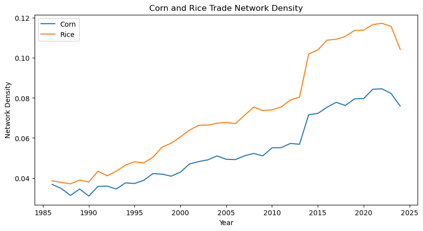
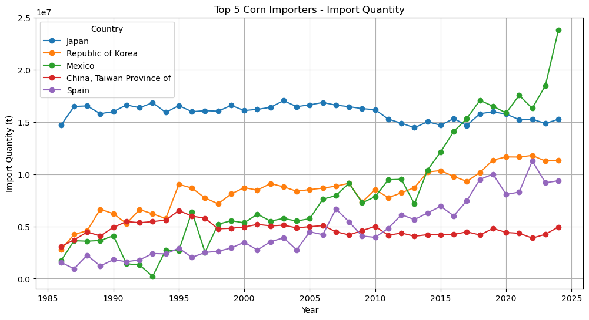
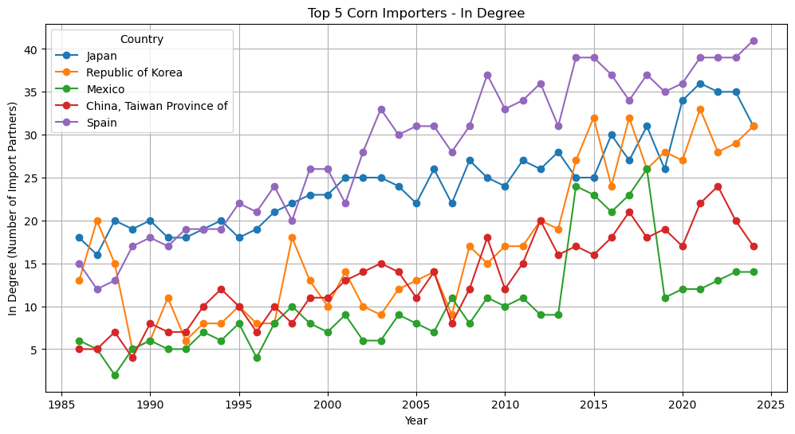
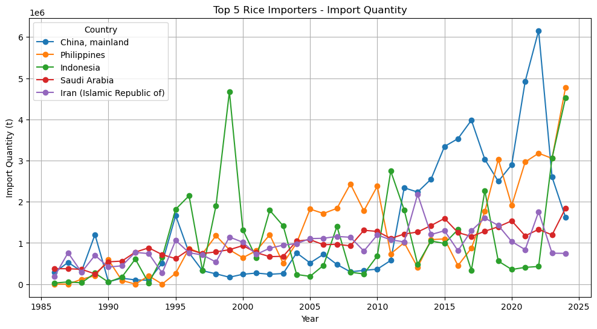
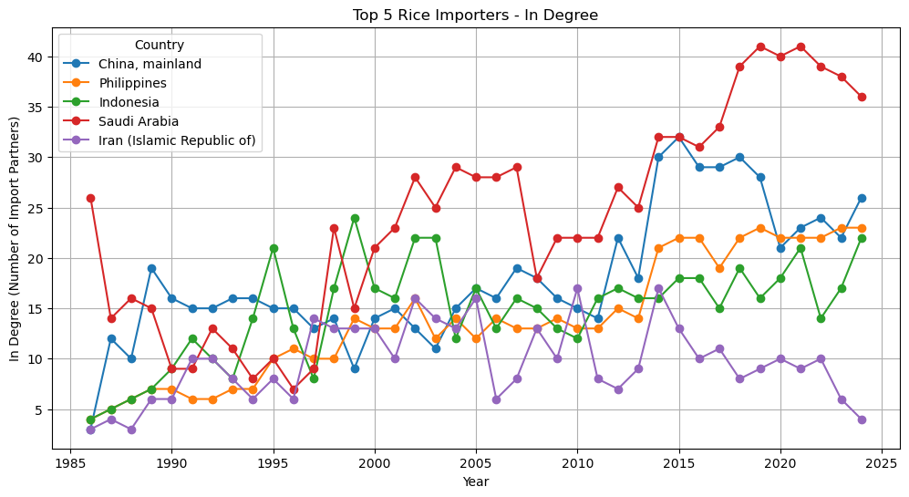
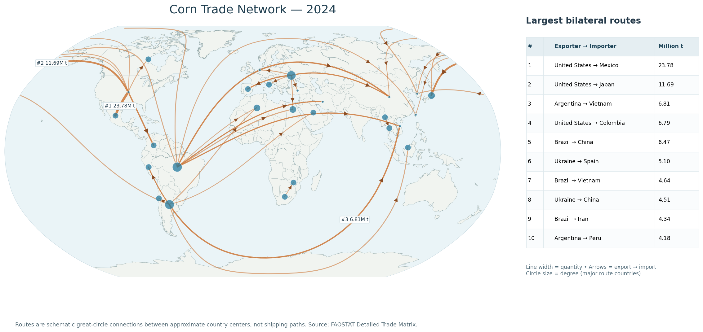
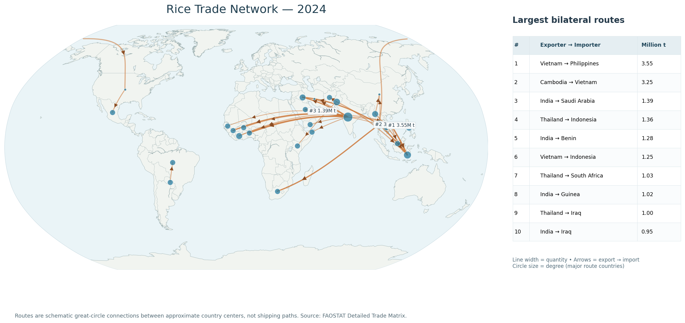

After constructing yearly directed trade networks from FAOSTAT data, I compared network density, the import volume and connectivity of major importers, and the central positions of countries in 2024. Corn and rice share a long-term increase in connectivity, but their key countries and routes are not the same.
1. How did network density change?

Density increased from 0.0368 to 0.0759 for corn and from 0.0386 to 0.1042 for rice between 1986 and 2024. Rice had a higher density throughout the series. This describes the proportion of observed trade connections, not the amount traded.
Both networks show a jump in 2014. Corn's recorded links increased from 2,085 (2013) to 2,681 (2014), while rice's increased from 3,103 to 4,017. Both declined in 2024. Changes in reporting coverage may also affect observed links, so these shifts should not automatically be treated as evidence of new or discontinued real-world trading relationships.
2. Import partners versus import volume
I tracked the same five countries in each commodity, selected by cumulative import quantity over 1986–2024. In-degree counts the number of source countries; weighted in-degree sums imported tonnes. The figures reveal why those are not interchangeable.
Corn


In 2024, Mexico imported approximately 23.85 million tonnes of corn from 14 countries, while Spain imported 9.38 million tonnes from 41 countries. More partners do not necessarily mean higher import volume.
Rice


The contrast also appears for rice: the Philippines imported around 4.77 million tonnes from 23 partners in 2024, versus 1.84 million tonnes from 36 partners for Saudi Arabia. These comparisons capture different network dimensions, but do not by themselves establish whether sourcing is concentrated among a few large suppliers.
3. Who is central to the 2024 network?
Total Degree combines incoming and outgoing edges; it counts directed trade connections, not the number of distinct partners or the volume shipped. The five largest values in each 2024 network were:
| Rank | Corn — country (Degree) | Rice — country (Degree) |
|---|---|---|
| 1 | United States (182) | United States (225) |
| 2 | France (169) | India (197) |
| 3 | Türkiye (135) | Thailand (193) |
| 4 | Brazil (131) | Italy (182) |
| 5 | Netherlands (128) | France (177) |
The United States ranked first by Degree in both networks, but other leading countries differed. Brazil ranked fourth for corn, while India and Thailand ranked second and third for rice. Different centrality metrics can also produce different rankings: for corn, the Netherlands had a higher eigenvector centrality than the United States despite a smaller Degree. These structural measures should not be interpreted as physical transit of goods through intermediate countries.
4. Where are the largest bilateral trade routes?
The maps below show the 30 largest routes in 2024. Line thickness indicates bilateral tonnage, arrows point from exporters to importers, and circle size represents total Degree. The tables in the figures list the ten largest routes explicitly.


Large corn flows connect the Americas with major importers including Japan, while several leading rice routes are within Asia. The maps show only the top 30 individual links, so they should not be used to infer the global share of interregional versus intraregional trade without additional calculations. Route arrows are schematic and do not trace real shipping paths.
5. Takeaway
Across 1986–2024, both commodity networks became more connected, with rice consistently showing higher density. But trade volume, partner count, and network centrality measure different things: a major importer need not have many partners, and a highly connected country need not participate in the largest bilateral shipment. Comparing all three offers a clearer view of the structure of global agricultural trade.
Source: FAOSTAT Detailed Trade Matrix (author's network calculations). Read Post 1: Data Preprocessing.